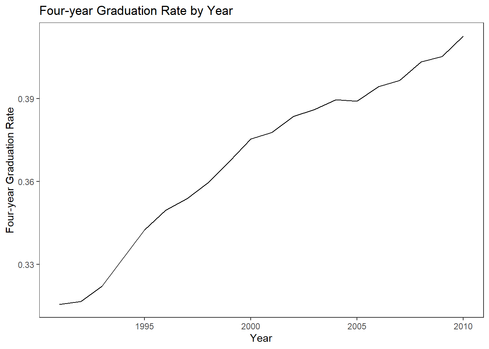
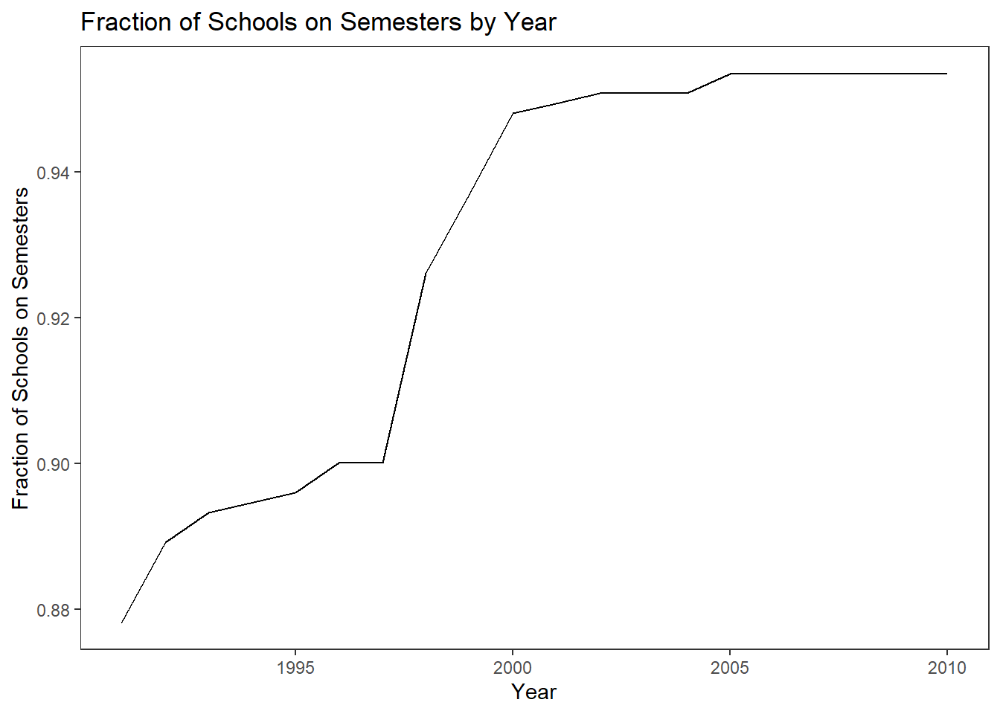
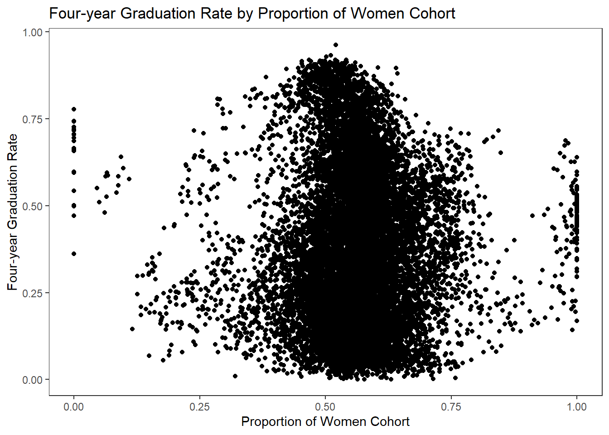
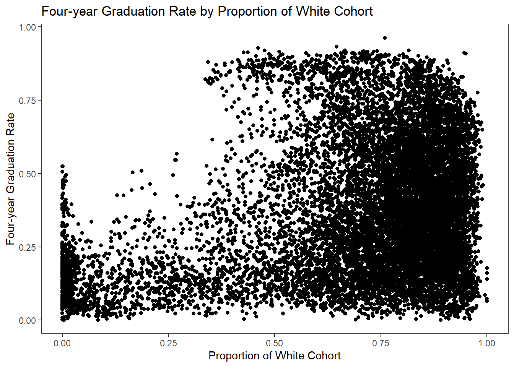
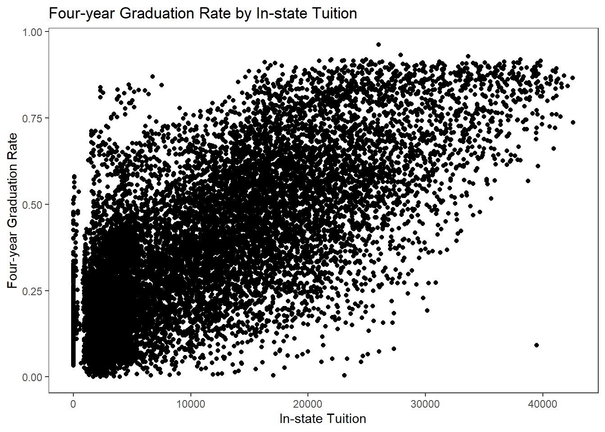
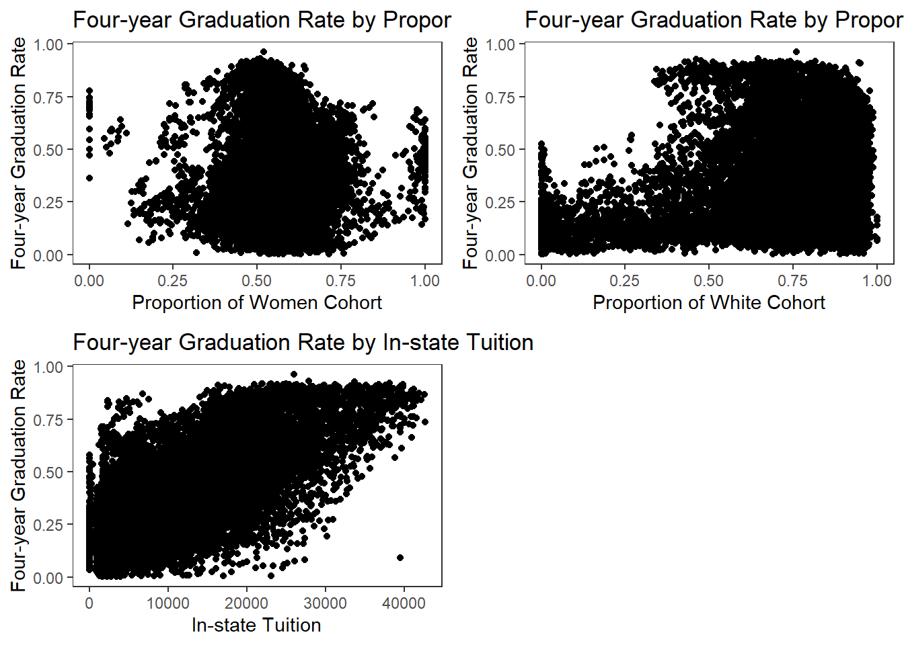

# ライブラリの読み込み
library(tidyverse)
library(ggplot2)
library(gt)
library(summarytools)
library(stargazer)
library(modelsummary)
library(gridExtra)
library(stringi)
library(kableExtra)analysis
(a) 記述統計
1.「(d) Master Dataの作成」で作成したデータの、各列に含まれるNAの数を数えなさい。
# cleaningフォルダからmasterデータの読み込み
df <- read_csv("../cleaning/workdata/master_work.csv")# 各列のnaの数をsummariseを使って数える
na_count <- df |>
summarise(across(everything(), ~ sum(is.na(.))))# 変数名と変数ラベル(=わかりやすい名前)の対応表の作成
variable_name <- names(df) # 変数名のリストを作成
variable_label <- c("Unit ID","Institution Name", "Semester Calendar","Quarter Calendar","Year", "Year Semester Started", "After Semester introduced", "Total Cohort Size","Women Cohort Size", "Men Cohort Size", "Number of Four-year Graduation", "Number of Men Four-year Graduation","Number of Women Four-year Graduation", "Four-year Women Graduation Rate","Four-year Graduation Rate", "Four-year Men Graduation Rate", "In-state Tuition", "Total Expenditures", "Faculty", "White Cohort Size") # ラベルのリストを作成
df_variable_labels <- tibble(variable = variable_name, label = variable_label) # 変数名と変数ラベルの対応表を作成
# 変数名からラベルを取得する関数の作成
get_df_label <- function(x){
xchar <- deparse(substitute(x))
df_variable_labels$label[df_variable_labels$variable == xchar]
}# 表の出力
gt(na_count) | unitid | instnm | semester | quarter | year | semester_start_year | semester_dummy | totcohortsize | w_cohortsize | m_cohortsize | tot4yrgrads | m_4yrgrads | w_4yrgrads | women_gradrate_4yr | total_gradrate_4yr | men_gradrate_4yr | instatetuition | costs | faculty | white_cohortsize |
|---|---|---|---|---|---|---|---|---|---|---|---|---|---|---|---|---|---|---|---|
| 0 | 0 | 0 | 0 | 0 | 12844 | 12844 | 0 | 0 | 0 | 0 | 0 | 0 | 24 | 0 | 65 | 0 | 0 | 0 | 0 |
2. 問題背景などを知る上で役に立つ記述統計を作成しなさい
# 各変数の平均と標準偏差を算出してデータフレーム(変数名、統計量、値という3変数を持つ)にする関数を作成
meansd <- function(df){
summary_stats <- df |>
summarise(across(everything(), list(mean = ~ mean(., na.rm = TRUE), sd = ~ sd(.,na.rm = TRUE)))) #平均と標準偏差を各変数で算出し表形式にする。列名は「X_Y」(Xは変数名、Yは記述統計量(meanかsd))という形
summary_stats <- summary_stats |>
t() |> # 欲しい形にするために転置
as.data.frame() |> # データフレーム化
rownames_to_column(var = "variables") |> # 「X_Y」を格納したvariablesという変数を追加する
mutate(variable = str_remove(variables, "_mean|_sd")) |> # 「X」の部分だけを抽出したvariableという変数を追加
mutate(statistics = ifelse(stri_detect_fixed(variables, "mean"), "mean", "sd")) |> # 「Y」の部分を抽出したstatisticsという変数を追加
select(-variables) |> # Variablesを削除
select(variable, statistics, V1)
return(summary_stats)
}# すべてのデータでの各変数の平均と標準偏差を算出
summary_stats_all <- meansd(df) |>
rename(All = V1) # 値が格納されている列の変数名をallに変更
# 学期制の移行が起こらなかった(never-switcher)の各変数の平均と標準偏差を算出
df_neverswitcher <- df |>
filter(is.na(semester_dummy)) # never-switcherを抽出
summary_stats_never_switcher <- meansd(df_neverswitcher) |>
rename(never_switcher = V1) # 値が格納されている列の変数名をnever_switcherに変更
# 学期制の移行が起こった(switcher)の各変数の平均と標準偏差を算出
df_switcher <- df |>
filter(!is.na(semester_dummy)) # switcherを抽出
summary_stats_switcher <- meansd(df_switcher) |>
rename(switcher = V1) # 値が格納されている列の変数名をswitcherに変更
# 3つのデータフレームを結合
summary_stats <- left_join(summary_stats_all, summary_stats_never_switcher, by = c("variable", "statistics"))
summary_stats<- left_join(summary_stats, summary_stats_switcher, by = c("variable", "statistics"))
# 記述統計に必要な変数を定義
select_var <- c("semester", "total_gradrate_4yr", "women_gradrate_4yr", "men_gradrate_4yr","faculty", "totcohortsize", "instatetuition", "costs")
# 不要な変数を取り除く
summary_stats <- summary_stats |>
filter(variable %in% select_var)summary_stats <- summary_stats |>
left_join(df_variable_labels, by = "variable") |> # 変数名と変数ラベルの対応表を結合
select(-variable) |> # 変数名を削除
select(label, everything()) # ラベルを最初に持ってくる
# 表にする
summary_stats |>
group_by(label) |> # 変数名でグループ化
gt() |> # 表にする
tab_header(title = "Institution-level summary statistics") |> # タイトルをつける
fmt_number(decimals = 2) # 数値は小数点以下2桁まで| Institution-level summary statistics | |||
|---|---|---|---|
| statistics | All | never_switcher | switcher |
| Semester Calendar | |||
| mean | 0.93 | 0.95 | 0.70 |
| sd | 0.25 | 0.22 | 0.46 |
| Total Cohort Size | |||
| mean | 1,099.45 | 1,084.86 | 1,278.78 |
| sd | 1,183.03 | 1,170.03 | 1,319.97 |
| Four-year Women Graduation Rate | |||
| mean | 0.41 | 0.42 | 0.32 |
| sd | 0.23 | 0.23 | 0.20 |
| Four-year Graduation Rate | |||
| mean | 0.37 | 0.38 | 0.27 |
| sd | 0.23 | 0.23 | 0.18 |
| Four-year Men Graduation Rate | |||
| mean | 0.32 | 0.33 | 0.22 |
| sd | 0.23 | 0.23 | 0.18 |
| In-state Tuition | |||
| mean | 11,088.47 | 11,375.81 | 7,556.80 |
| sd | 9,181.55 | 9,238.61 | 7,612.64 |
| Total Expenditures | |||
| mean | 192.10 | 188.67 | 234.23 |
| sd | 400.54 | 398.70 | 420.39 |
| Faculty | |||
| mean | 340.00 | 335.03 | 401.04 |
| sd | 382.59 | 377.78 | 432.91 |
3. 4年卒業率の平均推移を計算し、図で示しなさい
# 年ごとの4年卒業率平均を算出し、年度と卒業率平均を変数として持つデータフレームにする
gradrate_year <- df |>
group_by(year) |>
summarise(mean = mean(total_gradrate_4yr))# データフレームを用いて表を作図
gradrate_year_plot <- gradrate_year |>
ggplot()+
geom_line(aes(x = year,
y = mean))+
labs(x = "Year",
y = "Four-year Graduation Rate")+
theme_bw() +
ggtitle("Four-year Graduation Rate by Year")+
theme(panel.grid = element_blank())
print(gradrate_year_plot)
4. semester導入率を計算し、図で示しなさい
# 年ごとのsemesterの平均(=semesterの導入率)を算出し、年度とsemester導入率を変数として持つデータフレームにする
semrate_year <- df |>
group_by(year) |>
summarise(mean = mean(semester))# データフレームを用いて表を作図
semrate_year_plot <- semrate_year |>
ggplot()+
geom_line(aes(x = year,
y = mean))+
theme_bw() +
theme(panel.grid = element_blank())+
ggtitle("Fraction of Schools on Semesters by Year")+
labs(y = "Fraction of Schools on Semesters", x = "Year")
print(semrate_year_plot)
5. 以下の3つの変数を横軸、「4年卒業率」を縦軸にとった、散布図を作成しなさい。
1. 女子学生比率
# 女子学生比率の変数を追加
df <- df |>
mutate(w_cohort_prop = w_cohortsize/totcohortsize)
# df_variable_labelsに変数ラベルを追加
df_variable_labels <- df_variable_labels |>
add_row(variable = "w_cohort_prop", label = "Proportion of Women Cohort")# 散布図を描くための関数の作成
create_scatter_plot <- function(x, y, data){
# 引数の名前を文字列として取得
xchar <- deparse(substitute(x))
ychar <- deparse(substitute(y))
# 文字列をシンボルに変換
x_sym <- sym(xchar)
y_sym <- sym(ychar)
# 変数ラベルを取得
x_lab <- df_variable_labels$label[df_variable_labels$variable == xchar]
y_lab <- df_variable_labels$label[df_variable_labels$variable == ychar]
# 図の描写
data |>
ggplot() +
geom_point(aes(x = !!x_sym, y = !!y_sym)) + # !!を使ってシンボルを変数名として扱えるようにする
# 変数ラベルを使って軸ラベルとタイトルをつける
labs(x = x_lab,
y = y_lab,
title = paste(y_lab, "by",x_lab )) +
theme_bw() +
theme(panel.grid = element_blank())
}# 関数を使って散布図を描写
w_co_plot <- create_scatter_plot(w_cohort_prop, total_gradrate_4yr, df)
print(w_co_plot)
2. 白人学生割合
# 白人学生比率の変数を追加
df <- df |>
mutate(white_cohort_prop = white_cohortsize/totcohortsize)
# df_variable_labelsに変数ラベルを追加
df_variable_labels <- df_variable_labels |>
add_row(variable = "white_cohort_prop", label = "Proportion of White Cohort")# 関数を使って散布図を描写
whi_co_plot <- create_scatter_plot(white_cohort_prop, total_gradrate_4yr, df)
print(whi_co_plot)
3. 学費(instatetuition)
# 関数を使って散布図を描写
insta_plot <- create_scatter_plot(instatetuition, total_gradrate_4yr, df)
print(insta_plot)
# 3つの図を並べる
grid.arrange(w_co_plot, whi_co_plot, insta_plot, nrow = 2)
(b) 回帰分析
1. 以下の式を推定し、表にまとめなさい。
# 回帰式の推定
model1 <- lm(total_gradrate_4yr ~ semester_dummy, data = df)# 回帰分析表の作成
stargazer(model1,
covariate.labels = get_df_label(semester_dummy),
type = "html")| Dependent variable: | |
| total_gradrate_4yr | |
| After Semester introduced | 0.031** |
| (0.012) | |
| Constant | 0.251*** |
| (0.010) | |
| Observations | 1,045 |
| R2 | 0.006 |
| Adjusted R2 | 0.005 |
| Residual Std. Error | 0.183 (df = 1043) |
| F Statistic | 6.427** (df = 1; 1043) |
| Note: | p<0.1; p<0.05; p<0.01 |